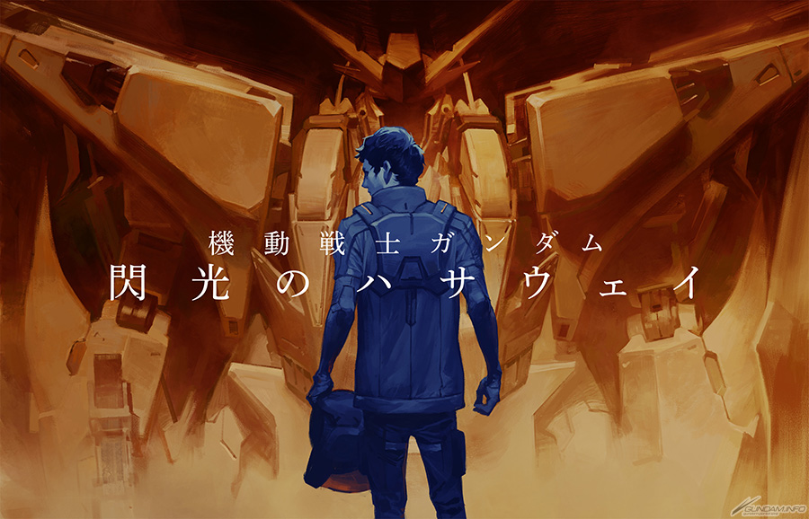

Mobile Suit Gundam (Universal Century Timeline)
Universal Century Gundam is worth watching for its deep and complex storyline that explores the harsh realities of war and its impact on humanity. The series features richly developed characters and political intrigue that add layers of depth to the narrative.
Tengen Toppa Gurren Lagann

Another Mecha series worth watching is Tengen Toppa Gurren Lagann. It's renowned for its story about teamwork. With a unique visual style that sets it apart, its blend of humor, emotion, and epic scale makes it a standout in the mecha genre.
Detective Conan

Detective Conan is great for its clever mysteries. Each case has detailed clues and surprises that keep you guessing until the end. The show's well-crafted plots make solving the puzzles alongside the main character both fun and satisfying.